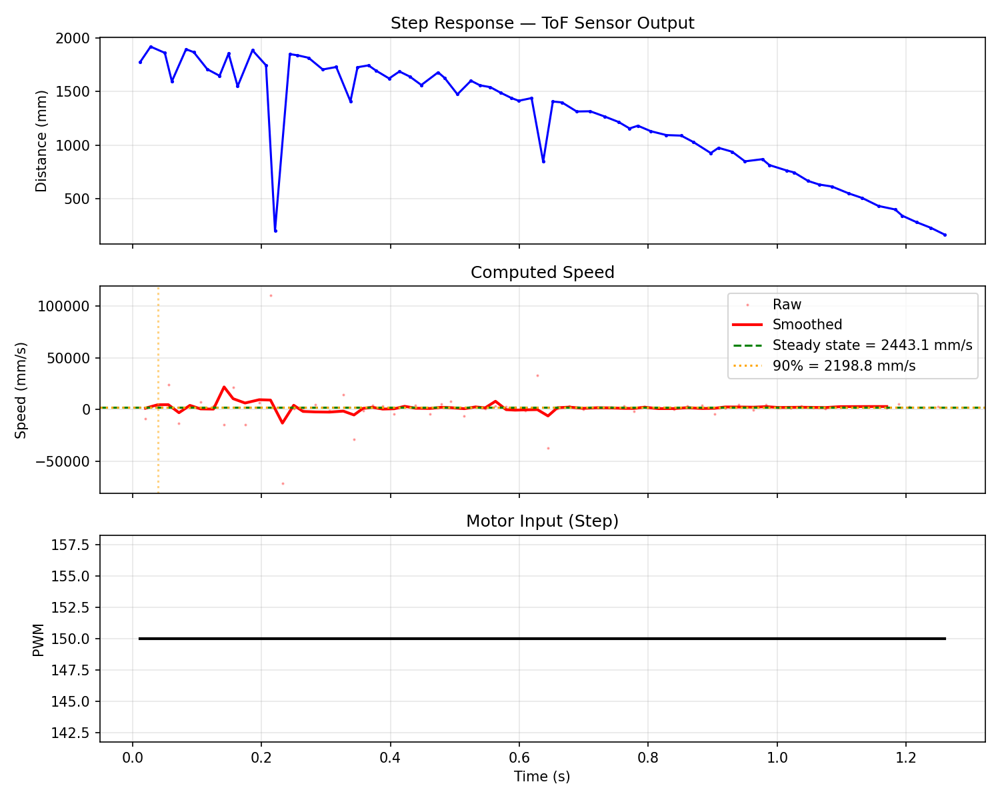
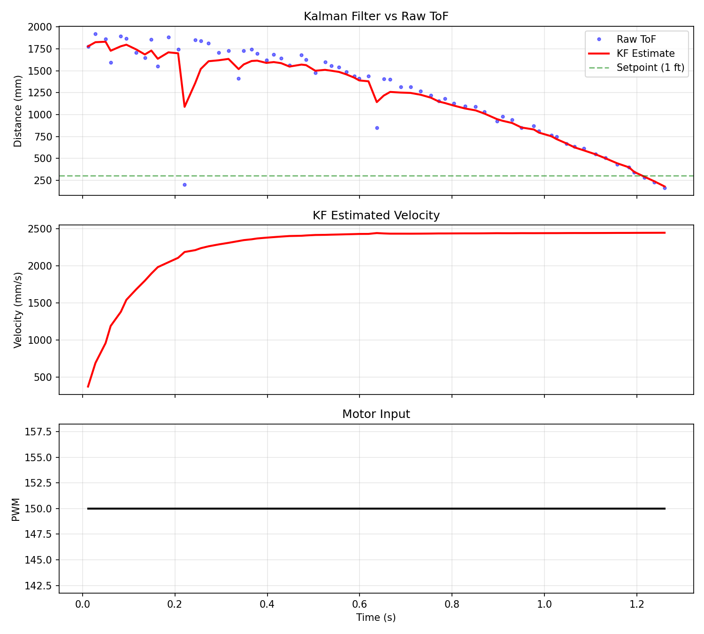
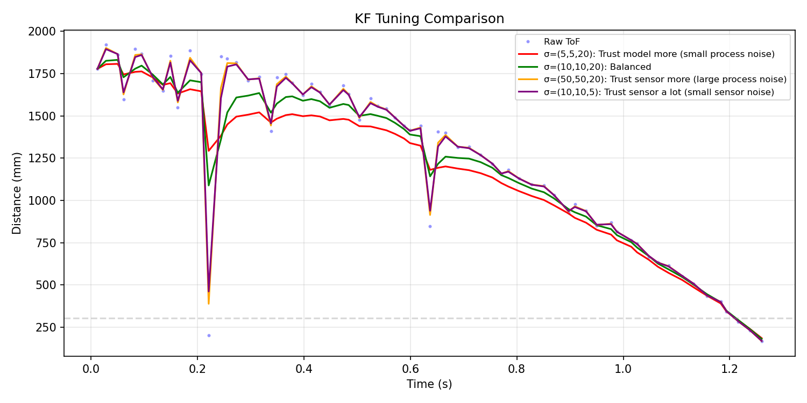
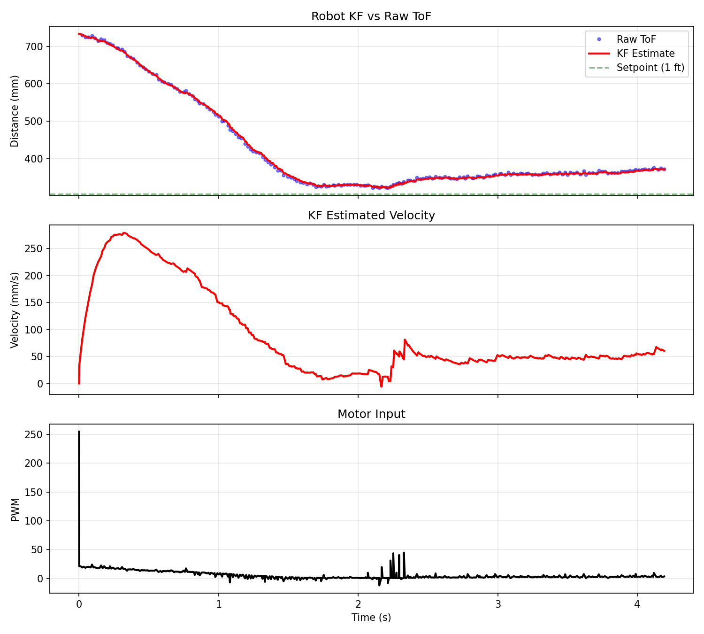

Lab 7: Kalman Filter
1. Estimate Drag and Momentum
Step Response
I drove the robot at constant PWM of 150 toward a wall while logging ToF distance. The robot logs for up to 5 seconds with a safety stop if it gets too close.
void run_step_response() {
unsigned long now = millis();
if ((now - step_start_time) > 5000) {
step_running = false;
stop_motors();
return;
}
if (tof_sensor.checkForDataReady()) {
float dist = tof_sensor.getDistance();
tof_sensor.clearInterrupt();
tof_sensor.stopRanging();
tof_sensor.startRanging();
if (dist < 150) { step_running = false; stop_motors(); return; }
if (data_count < MAX_DATA_POINTS) {
log_time[data_count] = now - step_start_time;
log_tof[data_count] = dist;
log_pwm[data_count] = step_pwm_value;
data_count++;
}
}
drive_straight(step_pwm_value);
}
Video: Step response experiment.
Computing d and m
I computed velocity from the ToF data using finite differences. The early readings had huge noise spikes so the automated rise time detection gave me 0.039s which is way too fast; I just eyeballed it from the distance plot at about 0.3s instead. Steady state speed came out to 2443 mm/s which is around 8 ft/s.
velocity = -np.diff(tof) / np.diff(times_s)
steady_state_speed = np.mean(vel_smooth[-n_last:])
d = 1.0 / steady_state_speed
m = -d * t_rise / np.log(1.0 - rise_fraction)Final values: d = 0.000409, m = 0.0000533. I saved these to a JSON file so I could keep them after resetting the kernel.
2. Initialize KF (Python)
Matrices and Noise
The state is [position, velocity]. The physics model comes from F = u - d*v. C is [-1, 0] because the ToF reads positive distance but position decreases as the robot goes toward the wall. Discretized with Ad = I + dt*A and Bd = dt*B.
A = np.array([[0, 1], [0, -d/m]])
B = np.array([[0], [1/m]])
C = np.array([[-1, 0]])
Ad = np.eye(2) + Delta_T * A
Bd = Delta_T * BSensor noise is sigma_z = 20mm from the ToF datasheet; process noise started at sigma_1 = sigma_2 = 10. Bigger process noise means less trust in the model, bigger sensor noise means less trust in the ToF. Initialized state with first ToF reading and zero velocity.
Sigma_u = np.array([[10**2, 0], [0, 10**2]])
Sigma_z = np.array([[20**2]])
x = np.array([[-TOF[0]], [0]])
sigma = np.array([[100, 0], [0, 100]])3. KF Sanity Check in Python
Running the Filter
I ran the KF function from the lecture slides on my Lab 5 data to check it before putting it on the robot; the input gets normalized by dividing PWM by the step size.
def kf(mu, sigma, u, y):
mu_p = Ad.dot(mu) + Bd.dot(u)
sigma_p = Ad.dot(sigma.dot(Ad.T)) + Sigma_u
sigma_m = C.dot(sigma_p.dot(C.T)) + Sigma_z
kkf_gain = sigma_p.dot(C.T.dot(np.linalg.inv(sigma_m)))
y_m = y - C.dot(mu_p)
mu = mu_p + kkf_gain.dot(y_m)
sigma = (np.eye(2) - kkf_gain.dot(C)).dot(sigma_p)
return mu, sigma
Tuning Sigmas
I tried four sigma combos. Small process noise (5,5) trusts the model more so the line is smoother but slower to react. Large process noise (50,50) basically passes the raw data through. Small sensor noise (sigma_z=5) snaps to every reading. Balanced (10,10,20) gave the best tradeoff so I went with that.

4. KF on the Robot
Implementation
The KF was added to my Lab 5 PID code using the BasicLinearAlgebra library. Predict runs every loop iteration (~1ms) but update only fires when the ToF has a new reading (~50-100ms); between readings the robot runs on the model alone. That is the whole point of doing this.
void kf_predict(float u_normalized) {
Matrix<1,1> u_mat = { u_normalized };
mu = Ad * mu + Bd * u_mat;
Sigma_state = Ad * Sigma_state * ~Ad + Sigma_u;
}
void kf_update(float tof_reading) {
Matrix<1,1> y_mat = { tof_reading };
Matrix<1,1> y_m = y_mat - C_mat * mu;
Matrix<1,1> S = C_mat * Sigma_state * ~C_mat + Sigma_z_mat;
Matrix<1,1> S_inv = { 1.0 / S(0,0) };
Matrix<2,1> K = Sigma_state * ~C_mat * S_inv;
mu = mu + K * y_m;
Sigma_state = (I2 - K * C_mat) * Sigma_state;
}Ad and Bd get recomputed each loop with actual dt so timing jitter doesn't mess things up. PID reads KF estimated distance instead of waiting for the next ToF reading.
// In main loop:
Ad(0,1) = dt_actual;
Ad(1,1) = 1.0 - dt_actual * kf_drag / kf_momentum;
Bd(1,0) = dt_actual / kf_momentum;
kf_predict(motor_pwm / kf_step_size);
if (tof_sensor.checkForDataReady()) {
kf_update(tof_sensor.getDistance());
}
kf_distance = -mu(0,0);
motor_pwm = compute_pid(kf_distance);Verification
I ran the KF at Lab 5 speed first to make sure it was working. The plot shows the KF line is smooth and continuous while the ToF dots are sparse. The filter fills in gaps between sensor readings correctly.

Video: KF + PID verification run.
Stopping at 1 Foot
Video: Robot stopping 1ft from wall using KF + PID.

Discussion
Without the KF the PID loop was stuck at the ToF update rate of 50-100ms. With the KF it runs every millisecond or so. The d and m values don't need to be super precise; the sigma tuning picks up the slack. I found this out when the automated rise time gave me garbage and I just estimated from the plot instead. The filter still worked fine. The sigmas are what actually matter for getting good performance.
Collaborations